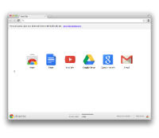
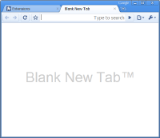

Override pages are a way to substitute an HTML file from your extension for a page that Google Chrome normally provides. In addition to HTML, an override page usually has CSS and JavaScript code.
An extension can replace any one of the following pages:
Note: A single extension can override only one page.
Note: If you want to override the page in incognito windows as well, make sure to specify "spanning" mode for the incognito manifest property.
Note: You cannot override the New Tab page in incognito windows.
The following screenshots show the default New Tab page next to a custom New Tab page.
| The default New Tab page | An alternative New Tab page |
|  |  |
Register an override page in the extension manifest like this:
{
"name": "My extension",
...
"chrome_url_overrides" : {
"pageToOverride": "myPage.html"
},
...
}
For pageToOverride, substitute one of the following:
bookmarks
history
newtab
For an effective override page, follow these guidelines:
Make your page quick and small.
Users expect built-in browser pages to open instantly.
Avoid doing things that might take a long time.
For example, avoid synchronous fetches of network or database resources.
Include a title in your page.
Otherwise people might see the URL of the page,
which could be confusing.
Here's an example of specifying the title:
<title>New Tab</title>
Don't rely on the page having the keyboard focus.
The address bar always gets the focus first
when the user creates a new tab.
Don't try to emulate the default New Tab page.
The APIs necessary to create
a slightly modified version of the default New Tab page —
with top pages,
recently closed pages,
tips,
a theme background image,
and so on —
don't exist yet.
Until they do,
you're better off trying to make something completely different.
You can find simple examples of defining override pages in the examples/api/override directory. For other examples and for help in viewing the source code, see Samples.